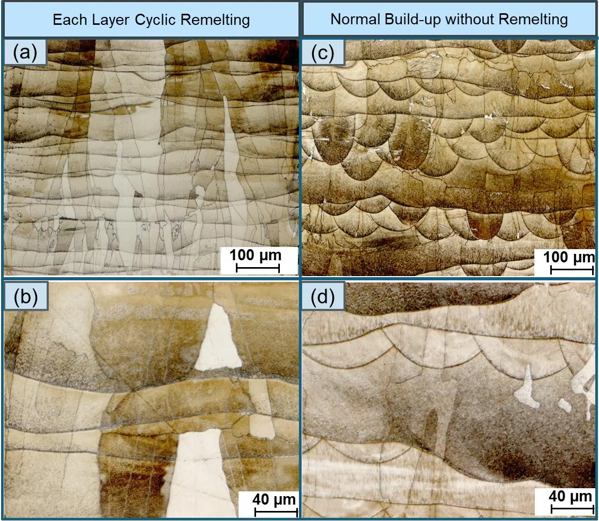
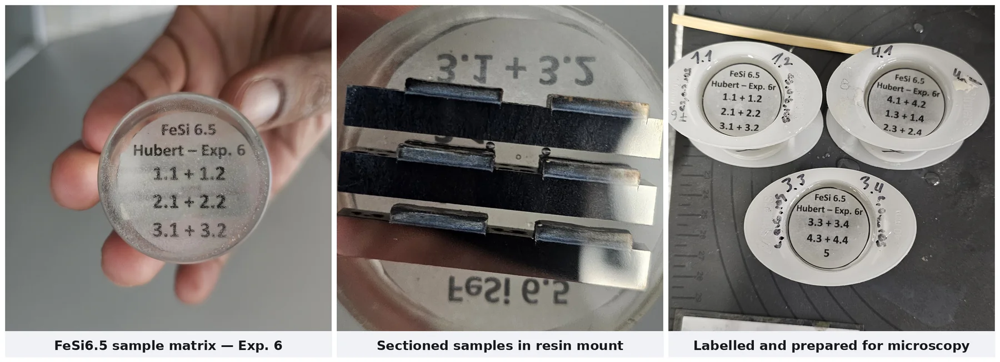
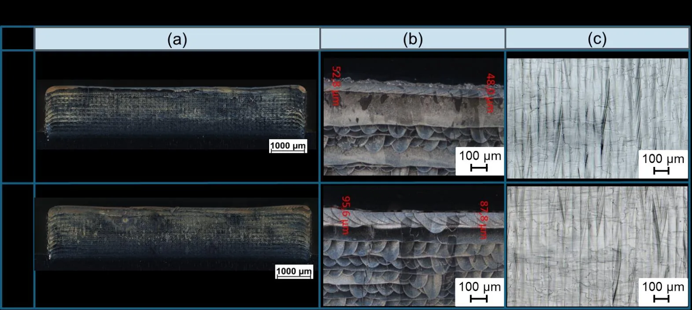

Projekt 01 — Masterarbeit · PBF-LB/M-Verfahrensentwicklung
In-Process-Laserumschmelzen für präzise Schichttopographie in weichmagnetischen FeSi6.5-Bauteilen
Masterarbeit · alleinige Bearbeitung · Hochschule Aalen, LaserApplikationsZentrum · eingereicht 09/2025
Eine Umschmelzstrategie im Wärmeleitungsregime, die die Schichttopographie von FeSi6.5 glättet und stängelförmige Körner in ein globulares Gefüge überführt — bei voller Dichte, in einer Legierung, die zum Walzen oder Stanzen zu spröde ist.
- ~60 %glattere Oberfläche
Sa 4,55 → 1,8 µm - 0,152 %Restporosität
- 2024begutachtet veröffentlicht,
Procedia CIRP
Hochschule: Hochschule Aalen — LaserApplikationsZentrum (LAZ) · Forschungsprogramm SmartPro – Smart-ADD
Anlage: ALC2 × ICM Universal-Laserforschungsanlage
Betreuer: Prof. Dr. Harald Riegel (Erstbetreuer) · Prof. Dr. Dagmar Goll (Zweitbetreuerin)
Eingereicht September 2025 · Verteidigt Oktober 2025 · Veröffentlicht in Procedia CIRP 124 (2024)
Problemstellung
Über 40 % der Verluste in einer elektrischen Maschine entfallen auf Wirbelströme. Die übliche Abhilfe ist die Blechung: dünne, einzeln isolierte Elektrobleche werden so gestapelt, dass der Strom keinen durchgehenden Pfad findet. FeSi6.5 wäre dafür das ideale Material — bis zu 30 % geringere Ummagnetisierungsverluste als herkömmliches Elektroblech. Es ist allerdings zu spröde, um ohne Risse gewalzt, gestanzt oder gegossen zu werden. Die Industrie konstruiert Motoren deshalb um das herum, was das Walzwerk liefern kann, und nicht um das, was der magnetische Kreis bräuchte.
Der 3D-Druck hebt diese Einschränkung auf und bringt eine neue mit sich. Gedruckte Oberflächen sind rau (Sa ≈ 4,55 µm), und eine raue Schicht benötigt eine dickere Isolationsschicht. Dickere Isolation bedeutet dickere Lamellen — und damit kehren die Wirbelstromverluste zurück.
Die Aufgabe: ein PBF-LB/M-Verfahren für FeSi6.5 etablieren, das gezielt glatte, kontrollierte Schichttopographie erzeugt — flach genug für eine ultradünne Isolationsschicht — bei voller Dichte, ohne Rissbildung und ohne Verlust an Maßhaltigkeit.

Wie es umgesetzt wurde — drei Versuchsphasen und hausinterne Verifikation
Phase 1 — Grundlegendes Prozessfenster festlegen
Eine 4 × 4-Matrix über Laserleistung 200–350 W und Scangeschwindigkeit 600–900 mm/s, bei konstant 80 µm Spurabstand, 80 µm Fokus, 40 µm Schichtdicke und 90° Scanrotation. Sechzehn Proben à 10 × 10 mm, Argon mit 4 m/s, < 200 ppm Restsauerstoff. 150 W schmolzen nicht auf, 400 W überschmolzen. Arbeitspunkt festgelegt auf 300 W / 800 mm/s ≈ 117 J/mm³, mit Sa 7,25 µm bei 0,152 % Porosität.
Phase 2 — Umschmelzen der Deckschicht
Eine einmalige Nachbelichtung der obersten Schicht, variiert über 300–400 W gegen Spotdurchmesser 80–200 µm. Zwei Fehlermechanismen traten auf, und sie voneinander zu trennen war der Schlüssel zum stabilen Prozessfenster:
- Schmelzgutablagerung an den Bauteilkanten skaliert mit der Leistungsintensität — bei 400 W / 160 µm erreichte die Ablagerung 898 µm bei 20,9 kW/mm²; bei 300 W sank sie auf 545 µm bei 15,7 kW/mm².
- Die Umschmelztiefe skaliert mit der flächenbezogenen Energieintensität.
Eine geringere Leistungsintensität unterdrückte die Kantenablagerung; eine reduzierte Flächenenergiedichte steuerte die Tiefe. Ein einzelner Wert für die volumetrische Energiedichte vermischt beide Effekte und kann diesen Zielkonflikt nicht auflösen.
Phase 3 — Zyklisches Umschmelzen
Das Umschmelzen wurde auf den gesamten Aufbau ausgeweitet, in Intervallen von jeder 1., 2., 3. und 5. Schicht, bei 325 W / 300 µm Spot / 60 µm Spurabstand / 600 und 800 mm/s, gegen eine nicht umgeschmolzene Referenz.

Verifikation — vollständig im eigenen Labor
- Flächenhafte Topographie: KEYENCE VR-3100 One-Shot-3D-Profilometer (Sa, Höhenkarten, Linienschnitte).
- Taktile Rauheit: MarSurf M400 (Ra, Rq, Rz, Rt), gemessen sowohl parallel als auch senkrecht zum Scanvektor — ein gerichteter Prozess erzeugt gerichtete Rauheit, und eine Messung in nur einer Richtung hätte das Ergebnis geschönt.
- Querschliffe: Struers Secotom 10 Trennen und Tegramin 30 Polieren parallel zur Aufbaurichtung, SiC 50–2000 Körnung, 3 µm und 1 µm Diamantsuspension, Co-m3-Ätzung (20–30 s) für Fe-Si; Aufnahme am Zeiss Axio Imager.Z2 Vario bis 500× mit ZEN Core zur Quantifizierung von Porengröße, Porenanzahl pro mm² und Flächenporosität über adaptive Schwellwertbildung.
- Prozesshardware: TRUMPF TruFiber 400 Singlemode-Faserlaser (1075 nm, 400 W) · SCANLAB intelliSCANse 30 Scanner · varioSCANde II 40i PR z-Shifter mit negativer Defokussierung · Autodesk AMCF Steuerung · Netfabb 2024 Baujobvorbereitung · hema ICAM weld koaxiale Prozessüberwachung.
Wesentlicher Beitrag & Ergebnisse
| Kenngröße | Ohne Umschmelzen | Deckschicht umgeschmolzen | Zyklisch (jede Schicht) |
|---|---|---|---|
| Flächenrauheit Sa | ~4,55 µm | ~2,4 µm | ~1,8 µm |
| Linienrauheit Ra | > 2,5 µm | ~1,5 µm | < 1,0 µm |
| Kornmorphologie | Stängelförmig | Teilweise globular | Vollständig globular |
| Gefügehomogenität | Mäßig | Verbessert | Sehr gut |
| Thermische Stabilität | Gut | Stabil | Sehr stabil |
| Gesamtverbesserung | — | +38 % glatter | +60 % glatter |

Umschmelzen gilt üblicherweise als reine Verdichtungsmaßnahme. Zyklisch angewendet wird es zu einem Werkzeug der Gefügeeinstellung: Das Umschmelzintervall steuert den Übergang von stängelförmiger zu globularer Erstarrung über die gesamte Bauteilhöhe. Die Kornmorphologie wird damit zu einer Prozesseinstellung statt zu einem Ergebnis.
DOI: 10.1016/j.procir.2024.08.060
Zur ausführlichen Darstellung der Publikation → (auf Englisch)